Dayro Smart Home
A smart home app for Dayro's switches, designed from nothing while the hardware was still being built. I was the lead designer on a team of three.
- Client
- Dayro Pvt. Ltd.
- Role
- Lead designer
- Team
- 3 designers
- Timeline
- 2 to 3 months
- Platforms
- Consumer and Installer apps
What Dayro makes
Dayro makes premium smart switches. Instead of being wired to one device each, they connect to a central node. So any switch can control any device, one switch can control many, and many switches can control one. On top of that: Scenes, energy monitoring, Safety Mode, Child Mode, and temperature, humidity and AQI from the nodes.
When I joined there was no app, no research and no documentation, and the hardware was still being built. Everything I learned came from client meetings, while the hardware team was still deciding what the switches could do.
One app or two
The plan was one app for setting up and for daily use. Then I mapped the setup.
First the app connects to the home Wi-Fi so it can find the switches. Then, for every switch, someone goes to the switchboard, toggles it, sees which device responds, and names it. For a typical 3BHK that's 1.5 to 2 hours of technical work, and no design could make it shorter. The time comes from how the hardware works.
Dayro sells to premium homeowners. Their first hour with the brand couldn't be a two-hour chore. So in a client meeting I didn't argue the point. I walked them through it, switch by switch, room by room. Toggle, connect, name. By about the third room, everyone at the table could see the answer.
An Installer app for Dayro's installation team, and a consumer app that opens to a home that's already set up. Most of the good decisions in the consumer app came from this one, because it no longer had to carry a job that was never its own.
The screen matches the wall
Since I'd proposed taking setup out, the installer's app was mine to design too. On screen, the panel looks exactly like the switchboard in front of the installer: a group of four, a group of two, another two and a knob.
The installer taps the switch they just toggled, picks what responded, names it, and moves on. They never translate between the wall and the screen, which matters when you do it 50 times in one home.
Which device responded?
The home screen, in three versions
One of my teammates had Google Home at home. Watching them use it settled it: they used the same few switches every day and rarely touched the rest. I use my own room's switches, not the kitchen's. For my mom it would be her room, the kitchen and the living room.
So the answer wasn't "show fewer devices". It was let each person's home screen follow their routine. You pin your rooms, your switches and your scenes. My app and my mom's would look completely different, and both would be right.
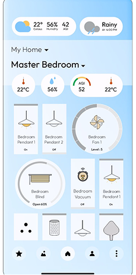
What the client gave us
Every device, every sensor, curtains and fan dials, all drawn like a remote. The instinct was right: it should feel like holding the controls. But it was laid out the way the system is wired, and nobody lives by their switchboard.
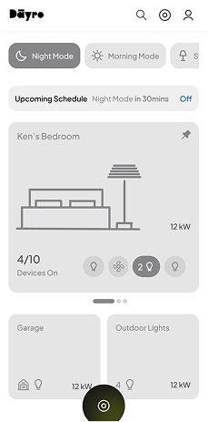
The first wireframe
Scenes at the top. Below them, what's about to happen ("Night Mode in 30 mins", with Off), so an automation never surprises you. Then the pinned room, then switches pinned from other rooms.
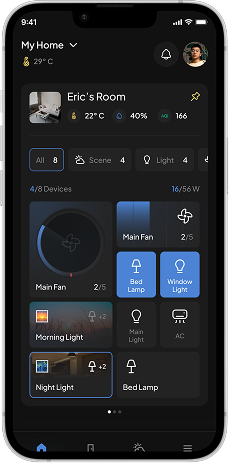
What the client changed
Their sharpest note: the room card was too small, and the room is what people open the app for. Now it takes most of the first screen, with the room's temperature, humidity, AQI and controls. Swipe it for the next room.
Drag a switch up, and it's on your home screen
The home screen only works if people actually pin things, so pinning had to be effortless. We borrowed what people already know from Android and iOS widgets, and Nothing OS in particular.
Inside a room, a line splits the screen. Above it is what shows on your home screen. Below it is every switch in the room. To add one, drag it up across the line. No edit mode, no settings, no checklist.
Cards come in 1x1, 2x1 and 2x2. A fan you use all the time can be a big dial you can actually turn. A lamp can stay a small toggle.
The dial works like the knob
Dayro's switches feel deliberate, and the client wanted the app to feel like part of the hardware, not a remote for it. The hardware gave us the rules: the physical knob can have as many steps as you define, and it comes two ways, stepped or smooth.
So the app's dial does the same. A fan steps from 0 to 6, with a vibration at each speed, like a regulator. A dimmer glides. Steps can be set per device: tight for precision, none for a glide, and sound for people who prefer it.
Scenes anyone can set up
A Scene runs several devices at once. Night Light turns on the bedroom and study lamps and warms the main light, with one tap or on its own. Scenes were the client's idea. My part was making them easy to set up.
They can trigger on temperature, humidity, light, time, weather or a mix, and repeat on schedules like every night but Sunday at 7 PM. With that much, a scene builder can easily become something only an engineer can use. We kept it simple enough for anyone who can use a phone, without hiding any of it. It was approved in the first round.
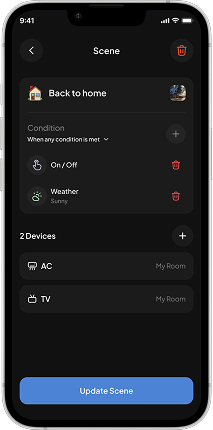
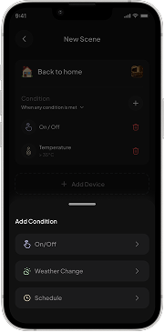
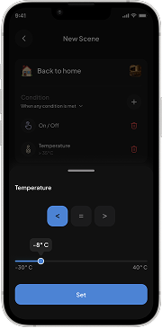
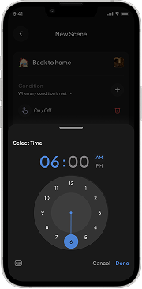
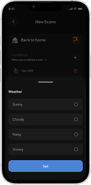
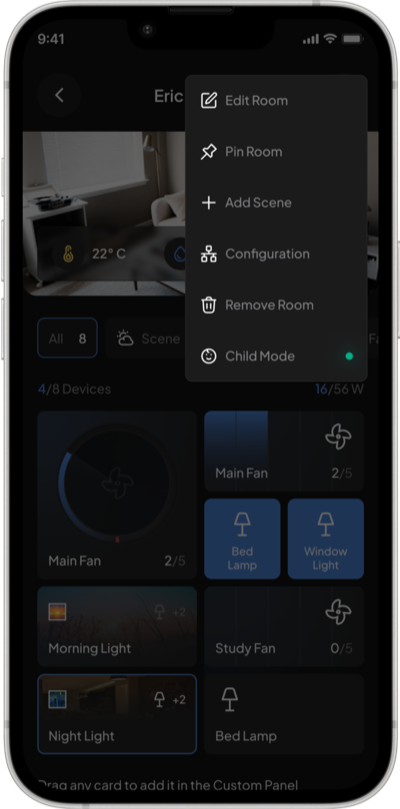
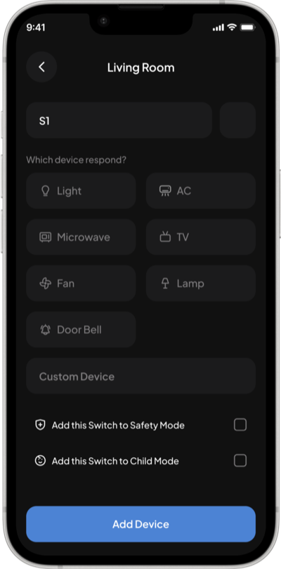
Safety Mode and Child Mode
Safety Mode was straightforward: when temperature or electrical load crosses a limit you set, every switch turns off except CCTV, so the home stays watched.
Child Mode is where we shaped the idea, around a child playing on the floor near a switchboard. With it on, the switches on the wall stop working, and those devices only respond to the app. You choose which switches it covers. A fridge socket high up on the wall can stay on, since a child can't reach it.
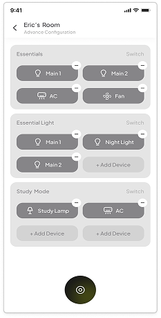
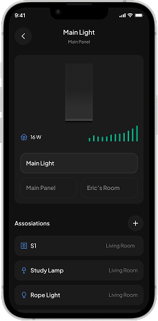
When the hardware changed
Halfway through, the hardware team lifted the limit on how many devices a switch could control: from four to unlimited. Our setup flow had four slots per switch, and to add a fifth device you had to remove one. So it became a list you can keep adding to.
A small change, but it shows what designing next to hardware in progress is like. A decision in another room could undo a flow.
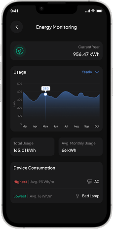
Energy you can act on
The energy screen leads with the device that uses the most and the one that uses the least. That gives you one place to start, which a graph of everything doesn't.
From wireframe to final
The room drawings stayed
Each room card has a drawing of the room. You recognise a room faster than you read its name, especially half asleep, reaching for the fan.
Scenes moved to the bottom
The top of the screen is a stretch for your thumb, and Scenes are tapped all the time. They moved to the bottom bar. The top is now for things you look at.
Upcoming schedules became a popup
Inline, it took up space all day for something that matters a few minutes before a scene runs. Now it works like an alarm: it shows up, you cancel or dismiss it, and it's gone.
Outcome
The app runs at Dayro's Experience Center in Ahmedabad, where the whole system is shown to buyers every day. The person who runs the demos told me it runs smoothly and they enjoy showing it, and they see the same reaction from visitors every time. The switches are, physically, ordinary switches. What people respond to is the app.
Four residential and commercial projects have bought the system. They're still under construction, and installations will follow. I plan to go back for real feedback once the first homes are lived in.
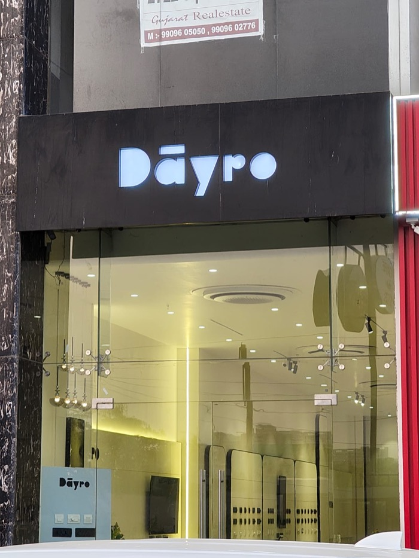
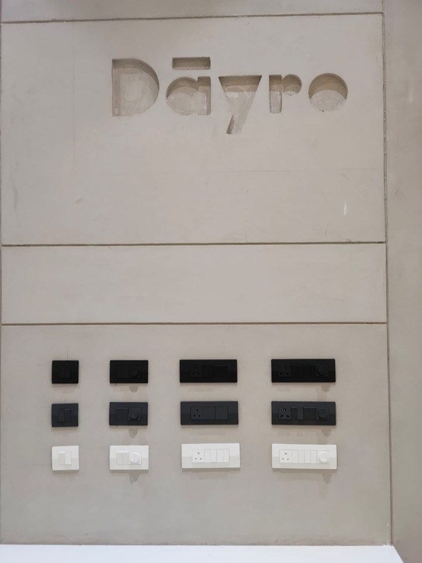
What I learned
The biggest decision on this project wasn't a screen. Setup looked like a design problem, but it was a product problem, and the fix was to take installation out of the consumer app entirely. That's what let the app do one thing well. Sometimes the best design decision is to take a whole job out of the app.